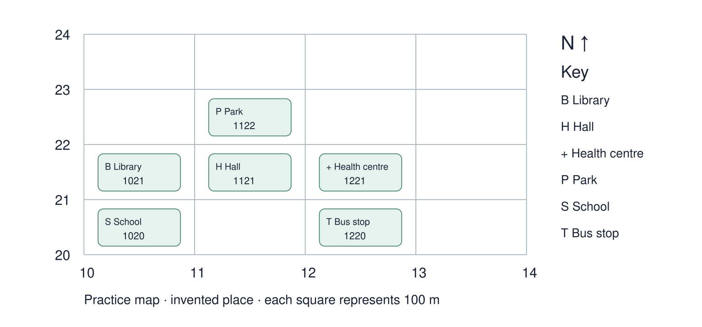

Arrival choices
You can begin without previous learning. Word help: settlement means a place where people live.
Start with 1 and 2. Try 3 and 4 when ready. Reading and exact scribing are available.
1 What does settlement mean?
Support: Use the reminder strip or talk it through with an adult.
2 Which meaning fits settlement?
Support: Choose: A place where people live OR Growth in the share of people living in urban places.
3 What area does a four-figure reference locate?
Support: Use the model evidence anchor grid or read one relevant card together.
4 Why consult the actual map key?
Support: Give a reason when ready.
Stretch: use a precise example or explain which detail supports your answer.
Evidence cards
Read, point or listen. Keep the source label with any detail you use.
A Local reference points
The Middlesbrough railway station and the Transporter Bridge are reference points on our digital map. Toggle layers to examine their positions. Town Hall lies beyond this map’s southern boundary.
Source: OpenStreetMap place references; approximate labelled coordinates
Limit: These points alone cannot show population density or prove why development happened.
B Reasons places grow
Work, transport and services can attract people and businesses. A growing town may need more homes and infrastructure. Population growth can also occur within existing settlements.
Source: Authored geographical explanation
Limit: A reason is a hypothesis until tested against evidence for a particular place.
C Practice land-use sample
Fictional practice tally: shops 8, homes 12, public services 4, green spaces 6. This is training data only. Replace it with your dated observations for the fieldwork enquiry.
Source: Authored classroom case
Limit: This example does not describe every person or place.
D Contrasting reference place
Compare a small centre such as Helmsley with central Middlesbrough at comparable map scales. Record the area, source and date used.
Source: OpenStreetMap linked views
Limit: One sampled street does not represent a whole settlement.
Visual resource
Use this visual with the evidence cards and enquiry questions.

Shared investigation
1. Compare the practice-map key with the linked OS symbol guide.
2. Read eastings before northings and practise four-figure references.
Work with a partner or adult, or use your own table. One person suggests; the other checks the evidence. Swap after one turn. Passing is allowed.
Use the evidence cards and any visual sheet. Follow the two shared steps above, then record one decision.
Support: Use the glossary and one chunk of evidence. Plan the claim and supporting detail before explaining.
Further challenge: Give a six-figure location within a square and explain the difference in precision.
Supported independent task
Complete this route only. Use maps OS symbols and grid references.
1. Identify the genuine OS abbreviations Sch, PO and FB using the supplied key.
2. Locate three features on the separate practice map using grid references and direction.
3. Answer one independent location or pattern question.
Support: Use the glossary and one chunk of evidence. Plan the claim and supporting detail before explaining. Complete the organiser one space at a time. The key identifies ___. Easting ___ then northing ___ gives ___.
An adult may read or scribe your exact response. They should not choose the answer.
Standard independent task
Complete this route only. Use maps OS symbols and grid references.
1. Identify the genuine OS abbreviations Sch, PO and FB using the supplied key.
2. Locate three features on the separate practice map using grid references and direction.
3. Answer one independent location or pattern question.
Support: The key identifies ___. Easting ___ then northing ___ gives ___.
Check the required evidence and revise one detail.
Stretch independent task
Complete this route only. Use maps OS symbols and grid references.
1. Identify the genuine OS abbreviations Sch, PO and FB using the supplied key.
2. Locate three features on the separate practice map using grid references and direction.
3. Answer one independent location or pattern question.
4. Give a six-figure location within a square and explain the difference in precision.
Support: Choose the evidence independently. Use the frame only if it helps.
Give a six-figure location within a square and explain the difference in precision.
Exit ticket
Choose a response mode. You may give your answers privately to an adult.
What area does a four-figure reference locate?
Why consult the actual map key?
Support: The key identifies ___. Easting ___ then northing ___ gives ___.
Further challenge: Give a six-figure location within a square and explain the difference in precision.